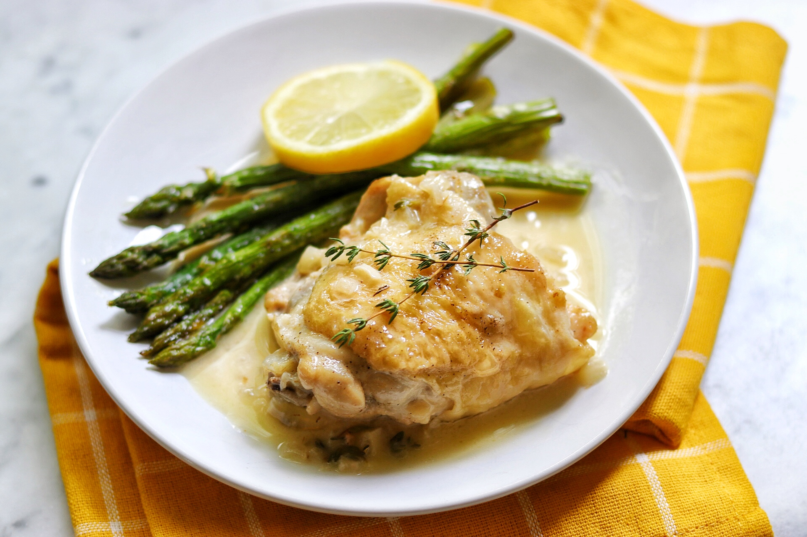

Oven Baked Chicken with Asparagus

Description
Oven baked chicken with asparagus is an ideal dish for bodybuilders. It has low Calories and is really easy to cook, the oven will do the work while you do your work.
Ingredients
- 4 to 8 pieces of chicken thigh
- 1 pound of asparagus
- a piece of lemon (optional)
- two tbsp of olive oil
- two tbsp of soy sauce
- one tbsp of cooking wine
- one tbsp of ground black pepper
- one tbsp of garlic salt
- one tbsp of smoked paprika
Steps
- Take a pot of water, add cooking wine and the chicke.
- Boil the water and cook chicken until blanched to remove the fishy smell of the meat.
- Put the chicken in containers, pour in ovlie oil, soy sauce, smoked paprika, and garlic salt. Mix them then marinate for two hours.
- Wash the asparagus and cut a thumb's length from the ends to remove the roots
- Turn oven to broil mode and heat it to 425 degrees Fahreheit.
- Put the chicken on an oven tray. Brush them with extra olive oil and add some black pepper.
- Bake the chicken first for 25 minutes. When finished, turn the chicken over and bake for another 25 minutes.
- Add asparagus more black pepper to the oven tray 10 minutes before the second 25-minute section ends.